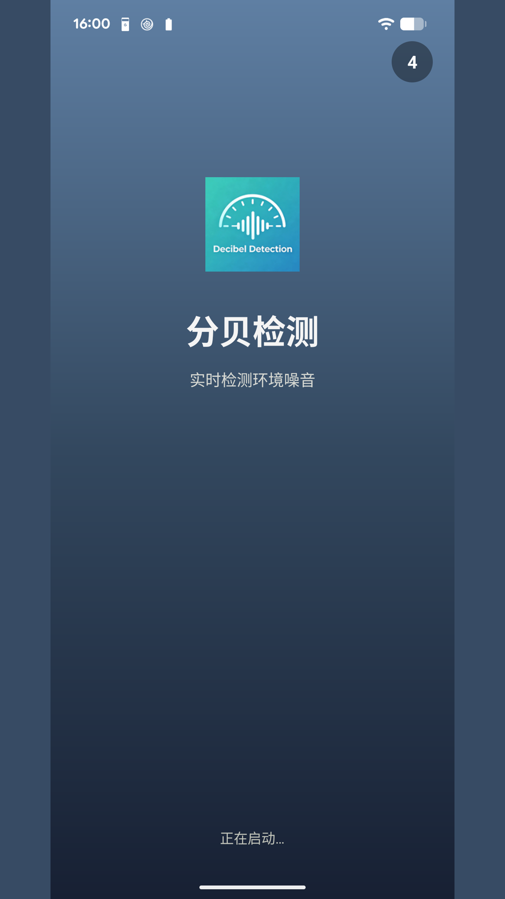
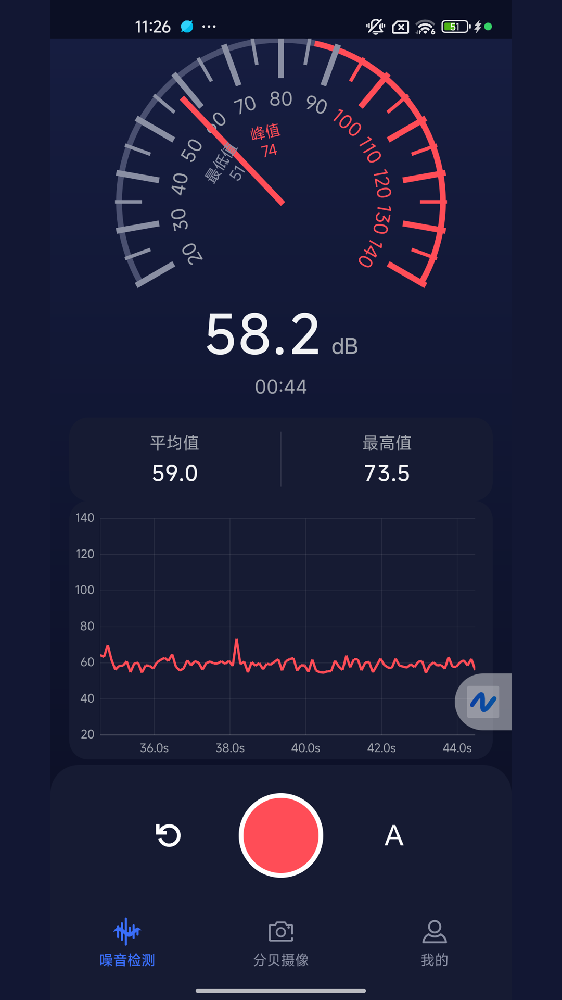
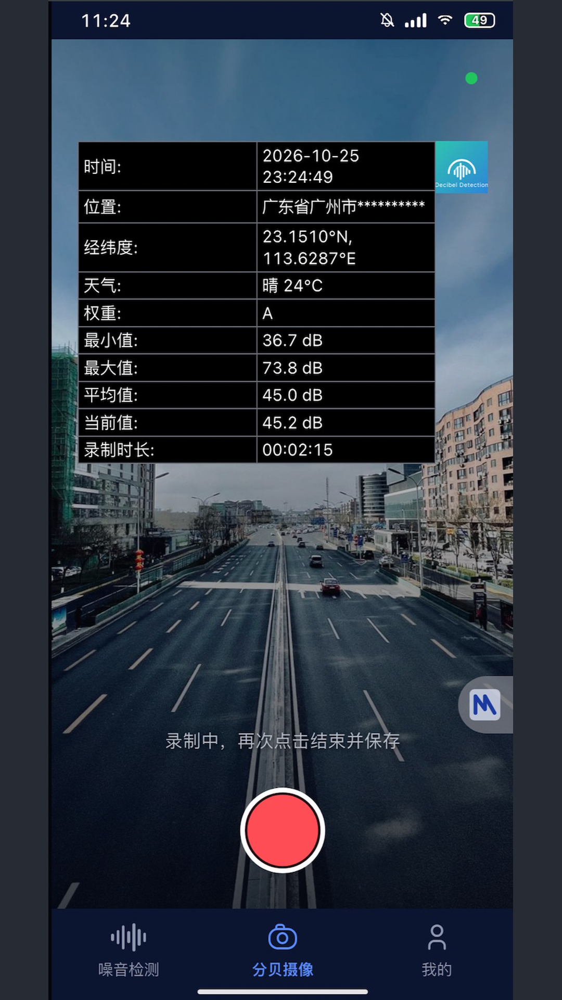
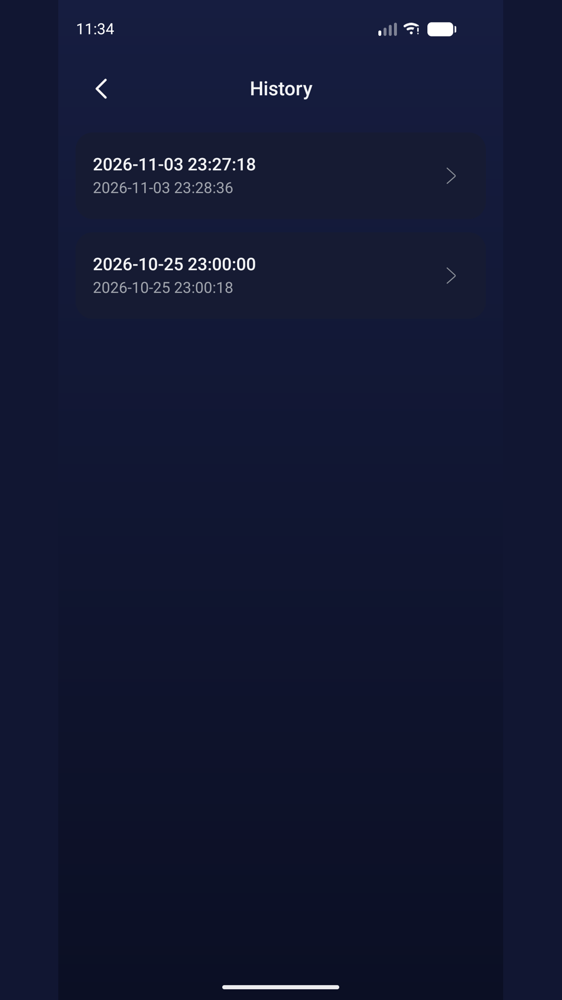
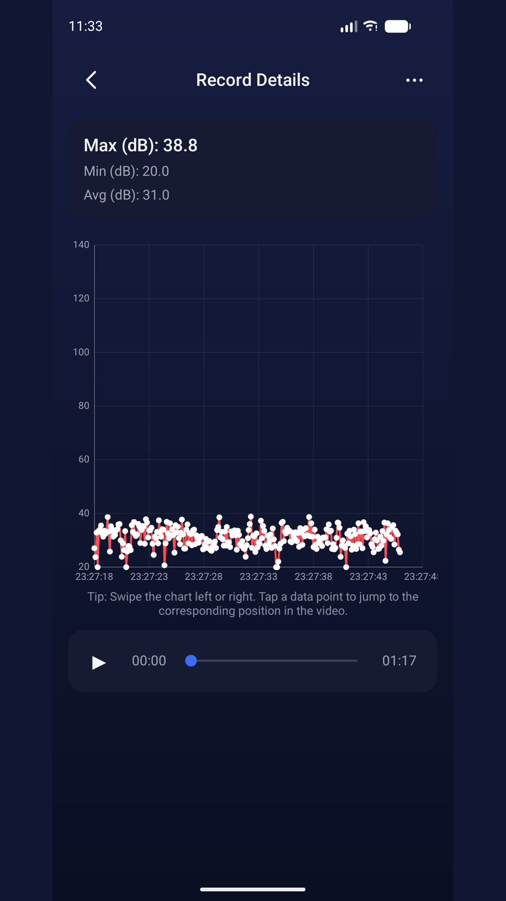
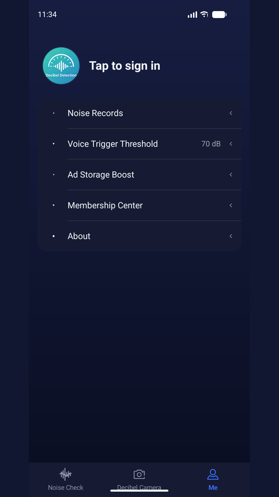

주머니 속 소음 측정기입니다. 주변 소음을 실시간으로 측정하고, dB 데이터가 입혀진 동영상을 녹화한 뒤, 모든 기록을 다시 재생하거나 공유하고 Excel로 내보낼 수 있습니다.
./screenshots 개인정보 처리방침 이용약관// 핵심 기능
44.1kHz 샘플링에 Goertzel 대역 분석과 A / C 가중을 적용합니다. 계기판에는 현재, 평균, 최대, 최소 dB와 실시간 추이 그래프가 표시됩니다.
녹화하는 동안 dB 통계, 시간, 주소, 좌표, 날씨를 동영상에 합성합니다. 전면·후면 카메라와 플래시를 지원합니다.
모든 측정이 자동으로 저장됩니다. 상세 화면에서는 dB 곡선을 그려 주며, 곡선의 어느 지점이든 탭하면 동영상의 해당 시점으로 이동합니다.
Excel 시트(요약 + 지점별 데이터), 동영상, 오디오를 하나로 묶어 시스템 공유 시트를 통해 보낼 수 있습니다.
소리 감지 자동 녹음: 소음 레벨이 설정한 기준값(기본 70dB, 40~140dB 범위에서 조절 가능)에 도달하면 3분 동안 자동으로 녹음이 시작됩니다.
중국어 간체, 중국어 번체, 영어, 일본어, 한국어, 베트남어를 지원합니다.
// 실제 기기에서 촬영

처음 실행하면 개인정보 안내가 표시됩니다. 동의하면 곧바로 측정 화면으로 이동합니다. 계정은 필요하지 않습니다.

계기판에 현재 소음 레벨이 표시되고, 그 아래에 평균, 최대, 최소값과 실시간 곡선이 함께 나타납니다.

촬영하면서 동시에 측정합니다. dB 값, 녹화 시간, 일시, 장소, 날씨가 동영상에 합성되므로 다시 재생할 때나 공유할 때도 그대로 확인할 수 있습니다.

모든 기록이 시간순으로 정리되어 측정 시간과 최대 / 평균 / 최소 dB가 함께 표시됩니다. 데이터는 사용자의 기기에 저장됩니다.

상세 화면에서는 전체 dB 곡선과 동영상 재생을 함께 볼 수 있습니다. 곡선의 아무 지점이나 탭하면 동영상이 그 시점으로 이동합니다.

Google 로그인, 멤버십 센터, 기록 횟수를 늘리는 리워드 광고, 소리 감지 기준값 설정, 그리고 개인정보 처리방침과 이용약관을 제공합니다.